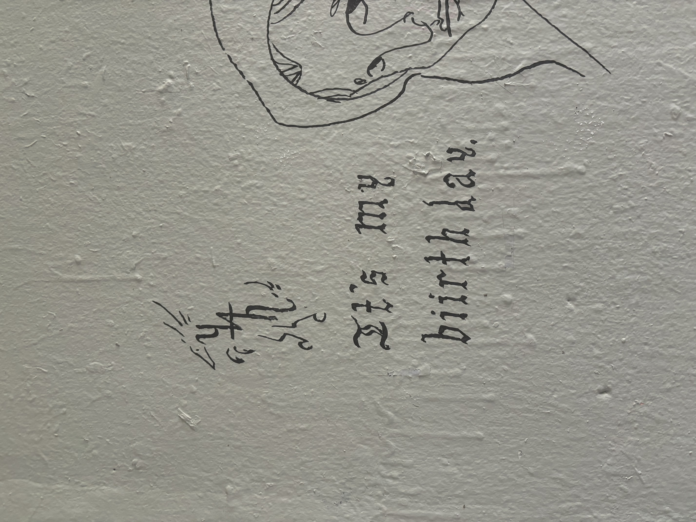

This photo was taken from the rock rings sculpture facing southwest.

This is a photo of the sculpture titled "Manus" by Magdalena Abakanowicz, facing southwest towards the parking lots.
This picture is of the sculpture by John Keppelman and is named "Garapata", facing towards the Arb.

This photo is the Untitled (Steam Work) art piece by Robert Morris in the center of the lawn.

This is image was taken of the out rock rings wall, near the southwest window.

This photo is of graffiti on the wall of the tunnel that leads to the fairhaven common building and dorms.
This is a photo of the rec center and the Untitiled art piece by Donald Judd outside it, taken from the path between the road and the rock rings.